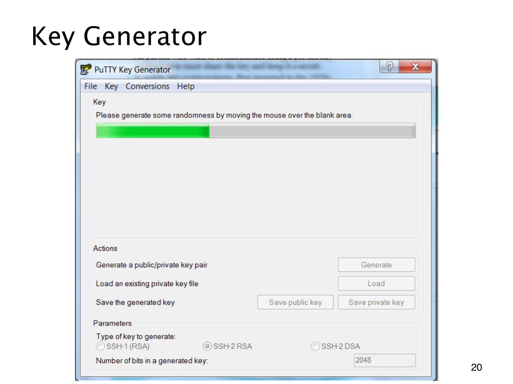

L1.14 · 第 20 页讲解原文
查看这一页课件

密钥生成与密钥保存是不同操作
PuTTY Key Generator 的这张历史截图中，进度条尚未完成，界面提示在空白区域移动鼠标以收集随机性。
随机性关系到私密参数能否被猜中。若不同用户的素数或其他秘密参数可以预测，即使 RSA 数学公式正确，秘密仍可能暴露。鼠标运动只是截图展示的一种熵来源，随意输入一些内容本身不等于完整的安全生成方案。
下方按钮分别为 Generate（生成）、Load（载入）、Save public key（保存公钥）与 Save private key（保存私钥）。生成一对密钥不等于已经保存；保存时也要分清公钥可以分发、私钥需要保密。
参数栏列出 RSA 等类型和示例位数 2048。这是把抽象密钥材料联系到生成、载入与保存流程的课件示例，没有新的 RSA 推导，也不是当前界面或部署参数建议，更不是要求实际在电脑上生成密钥。